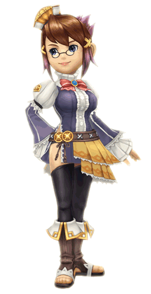

8 |
Figuren |
 |
 ● Leo ● LeoStam: Clavat De jonge koning die zijn moeder, de koningin, en kort daarna zijn konijkrijk verloor, werd gekozen door het kristal om de opdracht uit te voeren zijn koninkrijk in een nieuw land weer op te bouwen. Hij zal in zijn opdracht geholpen worden door de macht van de architek, een toverkunst die herinneringen waar kan maken. |
|
● Chime
Stam: Half-Clavat, Half-Selkie Ze is de voogdes, raadsvrouw en beste vriendin van Leo. Als kanselier van het koninkrijk verschijnt ze meteen naast Leo zodra hij zijn bel luidt. Ze helpt hem in alle administratieve taken, met inbegrip van het bouwen van gebouwen en het toezicht houden op de stemming van de burgers. Ze stuurt ook de jonge koning naar bed! |
|
 ● Hugh Yurg ● Hugh YurgStam : Lilty De moedige held van talloze strijden die eens de kristallen karavanen in het oude koninkrijk van Leo leidde. Hij geeft goed advies wat gevechten en keuken betreft en dient de jonge koning met onwrikbare trouw. |
|
 ● Pavlov ● PavlovStam : onbekend Dit schepsel verscheen plotseling toen de koning en zijn gevolg in het nieuwe koninkrijk aankwamen. Deze babbelende loopvogel kent nochtans veel meer dingen over dit koninkrijk dan het schijnt. |
 |
 |
 |